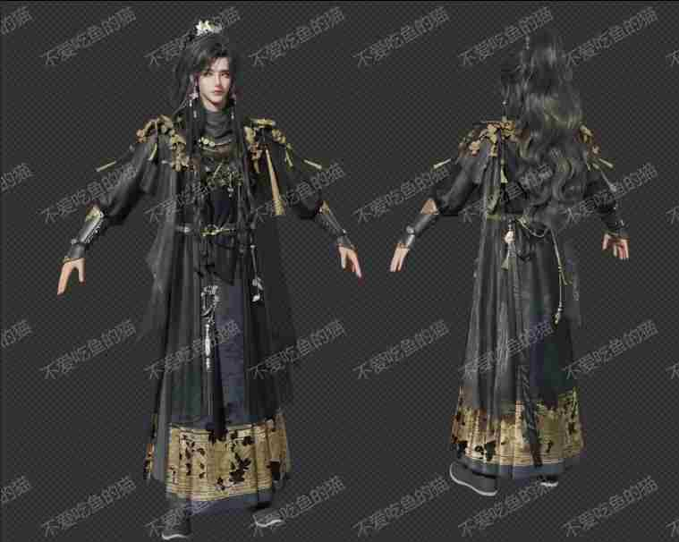

线索一 · 设定残页
执灯入雾者
旧案残页中留下他的行迹。服饰、器物与行旅痕迹被收束为资料页，不作为主视觉，只作为人物身份的第一枚证据。
雾起旧都 · 临渊而行
山门半掩，灯火未熄。循雾入城，听一段被尘封的旧事。
《临渊行》以一座沉入迷雾的古城为舞台。废弃的宫阙、仍在运转的机关、无人应答的长街，共同指向一场被刻意抹去的变故。玩家将在不同区域之间行走、辨认痕迹，并在克制的叙事中逐步接近深渊边缘的真相。
雾色入城，旧事将醒。
只给片段，不急于揭名。

旧案残页中留下他的行迹。服饰、器物与行旅痕迹被收束为资料页，不作为主视觉，只作为人物身份的第一枚证据。
她出现得很短，像被雾吞回的一句话。衣袂与眼神先于姓名，暗示城中更深处的答案。
庭院、长廊与山门，仍保留无人应答的余温。
以建筑比例、光影层次与材质细节建立可信空间，让探索始终发生在可触摸的旧城之中。
叙事不依赖密集对白，而由环境痕迹、声音方向与人物片段共同推动。
从山门、殿宇到隐秘廊道，不同区域保持独立记忆，也逐步拼合为同一场旧事。